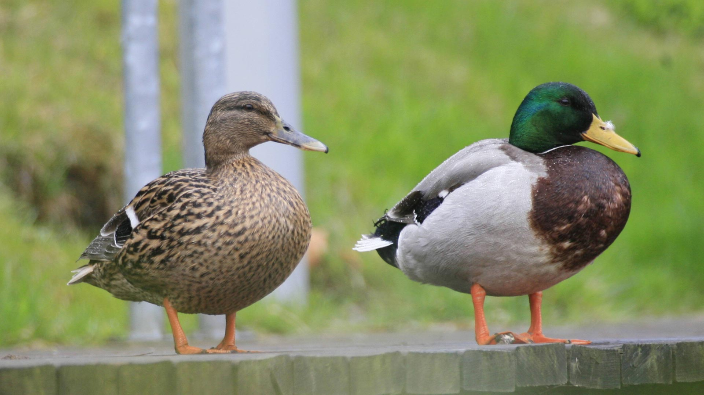
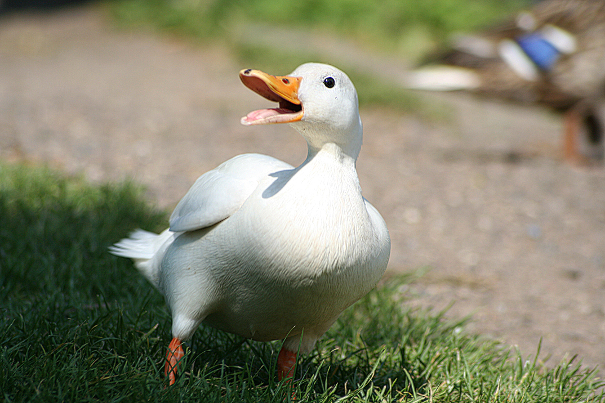

D U C K S
Why
D U C K S
are
cool
Why
D U C K S
are
cool
Why ducks are cool
cute animals
waddle
can fly
<h1>HOW TO PRONOUNCE:</h1> <p>Fromana Middle English *dukken, from Old English *ducan, *duccan (“to duck”); a secondary verb akin to Middle English duken, douken (“to duck, plunge under water, submerge”), from Old English *dūcan (“to dip, dive, duck”), from Proto-West Germanic *dūkan, from Proto-Germanic *dūkaną (“to dip, dive, bend down, stoop, duck”), probably from Proto-Indo-European *dʰewb- (“deep, hollow”) (whence Proto-Germanic *dūbaną (“to dive”)).</p>
Types
of
D U C K S
Types
of
D U C K S
Stockente

Hausente

Thanks for duckening!